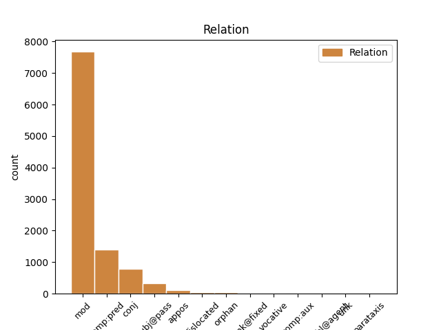
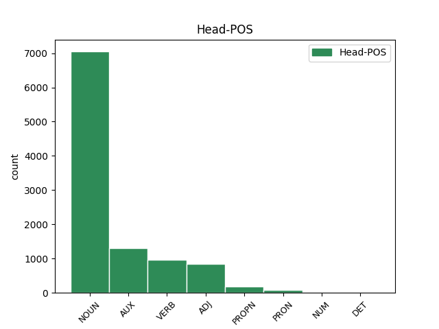
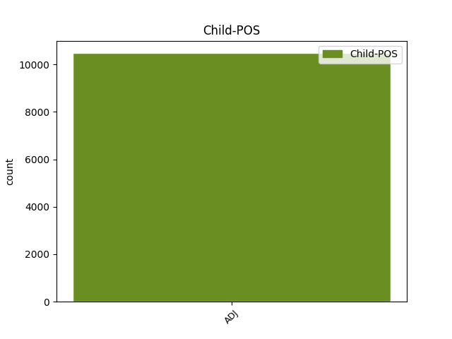

Distribution of features within this leaf



Agreement Rules sorted by frequency.
- When the dependent token is the modifer(mod) of the head token, and the dependent token is ADJ.
1 Obiurgationes _ _ _ _ 0 _ _ _
2 etiam _ _ _ _ 0 _ _ _
3 non _ _ _ _ 0 _ _ _
4 numquam _ _ _ _ 0 _ _ _
5 incidunt _ _ _ _ 0 _ _ _
6 necessariae _ _ _ _ 0 _ _ _
7 in _ _ _ _ 0 _ _ _
8 quibus _ _ _ _ 0 _ _ _
9 utendum _ _ _ _ 0 _ _ _
10 est _ _ _ _ 0 _ _ _
11 fortasse _ _ _ _ 0 _ _ _
12 et _ _ _ _ 0 _ _ _
13 vocis _ _ _ _ 0 _ _ _
14 contentione _ _ _ _ 0 _ _ _
15 maiore _ _ _ _ 0 _ _ _
16 et _ _ _ _ 0 _ _ _
17 verborum _ _ _ _ 0 _ _ _
18 gravitate gravitas NOUN Nb Case=Abl|Gender=Fem|Number=Sing 0 _ _ _
19 acriore acer ADJ A- Case=Abl|Degree=Cmp|Number=Sing 18 mod _ ref=1.136
20 id _ _ _ _ 0 _ _ _
21 agendum _ _ _ _ 0 _ _ _
22 etiam _ _ _ _ 0 _ _ _
23 ut _ _ _ _ 0 _ _ _
24 ea _ _ _ _ 0 _ _ _
25 facere _ _ _ _ 0 _ _ _
26 videamur _ _ _ _ 0 _ _ _
27 irati _ _ _ _ 0 _ _ _
1 Obiurgationes _ _ _ _ 0 _ _ _
2 etiam _ _ _ _ 0 _ _ _
3 non _ _ _ _ 0 _ _ _
4 numquam _ _ _ _ 0 _ _ _
5 incidunt incido VERB V- Mood=Ind|Number=Plur|Person=3|Tense=Pres|VerbForm=Fin|Voice=Act 0 _ _ _
6 necessariae necessarius ADJ A- Case=Nom|Degree=Pos|Gender=Fem|Number=Plur 5 comp:pred _ ref=1.136
7 in _ _ _ _ 0 _ _ _
8 quibus _ _ _ _ 0 _ _ _
9 utendum _ _ _ _ 0 _ _ _
10 est _ _ _ _ 0 _ _ _
11 fortasse _ _ _ _ 0 _ _ _
12 et _ _ _ _ 0 _ _ _
13 vocis _ _ _ _ 0 _ _ _
14 contentione _ _ _ _ 0 _ _ _
15 maiore _ _ _ _ 0 _ _ _
16 et _ _ _ _ 0 _ _ _
17 verborum _ _ _ _ 0 _ _ _
18 gravitate _ _ _ _ 0 _ _ _
19 acriore _ _ _ _ 0 _ _ _
20 id _ _ _ _ 0 _ _ _
21 agendum _ _ _ _ 0 _ _ _
22 etiam _ _ _ _ 0 _ _ _
23 ut _ _ _ _ 0 _ _ _
24 ea _ _ _ _ 0 _ _ _
25 facere _ _ _ _ 0 _ _ _
26 videamur _ _ _ _ 0 _ _ _
27 irati _ _ _ _ 0 _ _ _
1 Sit _ _ _ _ 0 _ _ _
2 ergo _ _ _ _ 0 _ _ _
3 hic _ _ _ _ 0 _ _ _
4 sermo _ _ _ _ 0 _ _ _
5 in _ _ _ _ 0 _ _ _
6 quo _ _ _ _ 0 _ _ _
7 Socratici _ _ _ _ 0 _ _ _
8 maxime _ _ _ _ 0 _ _ _
9 excellunt _ _ _ _ 0 _ _ _
10 lenis lenis ADJ A- Case=Nom|Degree=Pos|Gender=Masc|Number=Sing 0 _ _ _
11 minime _ _ _ _ 0 _ _ _
12 que _ _ _ _ 0 _ _ _
13 pertinax pertinax ADJ A- Case=Nom|Degree=Pos|Gender=Masc|Number=Sing 10 conj _ ref=1.134
14 insit _ _ _ _ 0 _ _ _
15 in _ _ _ _ 0 _ _ _
16 eo _ _ _ _ 0 _ _ _
17 lepos _ _ _ _ 0 _ _ _
1 hi hic ADJ Pd Case=Nom|Gender=Masc|Number=Plur 7 subj@pass _ ref=1.133
2 autem _ _ _ _ 0 _ _ _
3 optime _ _ _ _ 0 _ _ _
4 uti _ _ _ _ 0 _ _ _
5 lingua _ _ _ _ 0 _ _ _
6 Latina _ _ _ _ 0 _ _ _
7 putabantur puto VERB V- Aspect=Imp|Mood=Ind|Number=Plur|Person=3|Tense=Past|VerbForm=Fin|Voice=Pass 0 _ _ _
1 Admodum _ _ _ _ 0 _ _ _
2 autem _ _ _ _ 0 _ _ _
3 tenenda _ _ _ _ 0 _ _ _
4 sunt _ _ _ _ 0 _ _ _
5 sua suus ADJ Pt Case=Nom|Gender=Neut|Number=Plur|Person=3|Poss=Yes|Reflex=Yes 0 _ _ _
6 cuique _ _ _ _ 0 _ _ _
7 non _ _ _ _ 0 _ _ _
8 vitiosa vitiosus ADJ A- Case=Nom|Degree=Pos|Gender=Neut|Number=Plur 5 appos _ ref=1.110
9 sed _ _ _ _ 0 _ _ _
10 tamen _ _ _ _ 0 _ _ _
11 propria _ _ _ _ 0 _ _ _
12 quo _ _ _ _ 0 _ _ _
13 facilius _ _ _ _ 0 _ _ _
14 decorum _ _ _ _ 0 _ _ _
15 illud _ _ _ _ 0 _ _ _
16 quod _ _ _ _ 0 _ _ _
17 quaerimus _ _ _ _ 0 _ _ _
18 retineatur _ _ _ _ 0 _ _ _
1 Id _ _ _ _ 0 _ _ _
2 autem _ _ _ _ 0 _ _ _
3 ipsum _ _ _ _ 0 _ _ _
4 cernitur _ _ _ _ 0 _ _ _
5 in _ _ _ _ 0 _ _ _
6 duobus _ _ _ _ 0 _ _ _
7 si _ _ _ _ 0 _ _ _
8 et _ _ _ _ 0 _ _ _
9 solum solus ADJ A- Case=Acc|Degree=Pos|Gender=Neut|Number=Sing 15 dislocated _ ref=1.67
10 id _ _ _ _ 0 _ _ _
11 quod _ _ _ _ 0 _ _ _
12 honestum _ _ _ _ 0 _ _ _
13 sit _ _ _ _ 0 _ _ _
14 bonum _ _ _ _ 0 _ _ _
15 iudices iudico VERB V- Mood=Sub|Number=Sing|Person=2|Tense=Pres|VerbForm=Fin|Voice=Act 0 _ _ _
16 et _ _ _ _ 0 _ _ _
17 ab _ _ _ _ 0 _ _ _
18 omni _ _ _ _ 0 _ _ _
19 animi _ _ _ _ 0 _ _ _
20 perturbatione _ _ _ _ 0 _ _ _
21 liber _ _ _ _ 0 _ _ _
22 sis _ _ _ _ 0 _ _ _
1 verum _ _ _ _ 0 _ _ _
2 alterum _ _ _ _ 0 _ _ _
3 exercitatio _ _ _ _ 0 _ _ _
4 augebit _ _ _ _ 0 _ _ _
5 alterum alter ADJ A- Case=Acc|Degree=Pos|Gender=Neut|Number=Sing 6 orphan _ ref=1.133
6 imitatio imitatio NOUN Nb Case=Nom|Gender=Fem|Number=Sing 0 _ _ _
7 presse _ _ _ _ 0 _ _ _
8 loquentium _ _ _ _ 0 _ _ _
9 et _ _ _ _ 0 _ _ _
10 leniter _ _ _ _ 0 _ _ _
1 in _ _ _ _ 0 _ _ _
2 his _ _ _ _ 0 _ _ _
3 et _ _ _ _ 0 _ _ _
4 nobilissimi _ _ _ _ 0 _ _ _
5 philosophi _ _ _ _ 0 _ _ _
6 longe _ _ _ _ 0 _ _ _
7 que _ _ _ _ 0 _ _ _
8 principes _ _ _ _ 0 _ _ _
9 et _ _ _ _ 0 _ _ _
10 quidam _ _ _ _ 0 _ _ _
11 homines _ _ _ _ 0 _ _ _
12 severi _ _ _ _ 0 _ _ _
13 et _ _ _ _ 0 _ _ _
14 graves _ _ _ _ 0 _ _ _
15 ne _ _ _ _ 0 _ _ _
16 c _ _ _ _ 0 _ _ _
17 populi _ _ _ _ 0 _ _ _
18 ne _ _ _ _ 0 _ _ _
19 c _ _ _ _ 0 _ _ _
20 principum _ _ _ _ 0 _ _ _
21 mores _ _ _ _ 0 _ _ _
22 ferre _ _ _ _ 0 _ _ _
23 potuerunt _ _ _ _ 0 _ _ _
24 vixerunt _ _ _ _ 0 _ _ _
25 que _ _ _ _ 0 _ _ _
26 non nonnullus ADJ A- Case=Nom|Degree=Pos|Gender=Masc|Number=Plur 0 _ _ _
27 nulli nulli ADJ A- Case=Nom|Degree=Pos|Gender=Masc|Number=Plur 26 unk@fixed _ ref=1.69
28 in _ _ _ _ 0 _ _ _
29 agris _ _ _ _ 0 _ _ _
30 delectati _ _ _ _ 0 _ _ _
31 re _ _ _ _ 0 _ _ _
32 sua _ _ _ _ 0 _ _ _
33 familiari _ _ _ _ 0 _ _ _
1 illud _ _ _ _ 0 _ _ _
2 me _ _ _ _ 0 _ _ _
3 mi _ _ _ _ 0 _ _ _
4 Attice Atticus ADJ A- Case=Voc|Degree=Pos|Gender=Masc|Number=Sing 10 vocative _ ref=6.1.20
5 in _ _ _ _ 0 _ _ _
6 extrema _ _ _ _ 0 _ _ _
7 fere _ _ _ _ 0 _ _ _
8 parte _ _ _ _ 0 _ _ _
9 epistulae _ _ _ _ 0 _ _ _
10 commovit commoveo VERB V- Aspect=Perf|Mood=Ind|Number=Sing|Person=3|Tense=Past|VerbForm=Fin|Voice=Act 0 _ _ _
1 sed _ _ _ _ 0 _ _ _
2 ista _ _ _ _ 0 _ _ _
3 admonitio _ _ _ _ 0 _ _ _
4 tua _ _ _ _ 0 _ _ _
5 tam _ _ _ _ 0 _ _ _
6 accurata _ _ _ _ 0 _ _ _
7 nescio nescio AUX V- Mood=Ind|Number=Sing|Person=1|Tense=Pres|VerbForm=Fin|Voice=Act 0 _ _ _
8 quid quis ADJ Px Case=Acc|Gender=Neut|Number=Sing 7 comp:aux _ ref=6.1.20
9 mihi _ _ _ _ 0 _ _ _
10 significare _ _ _ _ 0 _ _ _
11 visa _ _ _ _ 0 _ _ _
12 est _ _ _ _ 0 _ _ _
1 non _ _ _ _ 0 _ _ _
2 enim _ _ _ _ 0 _ _ _
3 estis _ _ _ _ 0 _ _ _
4 vos _ _ _ _ 0 _ _ _
5 loquentes _ _ _ _ 0 _ _ _
6 sed _ _ _ _ 0 _ _ _
7 Spiritus spiritus NOUN Nb Case=Nom|Gender=Masc|Number=Sing 0 _ _ _
8 Sanctus sanctus ADJ A- Case=Nom|Degree=Pos|Gender=Masc|Number=Sing 7 unk _ ref=MARK_13.11
1 quid _ _ _ _ 0 _ _ _
2 est sum AUX V- Mood=Ind|Number=Sing|Person=3|Tense=Pres|VerbForm=Fin|Voice=Act 0 _ _ _
3 hoc _ _ _ _ 0 _ _ _
4 quod _ _ _ _ 0 _ _ _
5 dicit _ _ _ _ 0 _ _ _
6 nobis _ _ _ _ 0 _ _ _
7 modicum modicus ADJ A- Case=Acc|Degree=Pos|Gender=Neut|Number=Sing 2 parataxis _ ref=JOHN_16.17
8 et _ _ _ _ 0 _ _ _
9 non _ _ _ _ 0 _ _ _
10 videbitis _ _ _ _ 0 _ _ _
11 me _ _ _ _ 0 _ _ _
12 et _ _ _ _ 0 _ _ _
13 iterum _ _ _ _ 0 _ _ _
14 modicum _ _ _ _ 0 _ _ _
15 et _ _ _ _ 0 _ _ _
16 videbitis _ _ _ _ 0 _ _ _
17 me _ _ _ _ 0 _ _ _
18 et _ _ _ _ 0 _ _ _
19 quia _ _ _ _ 0 _ _ _
20 vado _ _ _ _ 0 _ _ _
21 ad _ _ _ _ 0 _ _ _
22 Patrem _ _ _ _ 0 _ _ _
1 hoc _ _ _ _ 0 _ _ _
2 adfirmo _ _ _ _ 0 _ _ _
3 neminem _ _ _ _ 0 _ _ _
4 umquam _ _ _ _ 0 _ _ _
5 tanta _ _ _ _ 0 _ _ _
6 calamitate _ _ _ _ 0 _ _ _
7 esse _ _ _ _ 0 _ _ _
8 adfectum _ _ _ _ 0 _ _ _
9 nemini nemo ADJ Px Case=Dat|Gender=Masc|Number=Sing 12 comp:obl@agent _ ref=3.7.2
10 mortem _ _ _ _ 0 _ _ _
11 magis _ _ _ _ 0 _ _ _
12 optandam opto VERB V- Case=Acc|Gender=Fem|Number=Sing|VerbForm=Gdv 0 _ _ _
13 fuisse _ _ _ _ 0 _ _ _
Disagree Examples:
1 et _ _ _ _ 0 _ _ _
2 ad _ _ _ _ 0 _ _ _
3 praesides _ _ _ _ 0 _ _ _
4 et _ _ _ _ 0 _ _ _
5 ad _ _ _ _ 0 _ _ _
6 reges _ _ _ _ 0 _ _ _
7 ducemini _ _ _ _ 0 _ _ _
8 propter _ _ _ _ 0 _ _ _
9 me _ _ _ _ 0 _ _ _
10 in _ _ _ _ 0 _ _ _
11 testimonium testimonium NOUN Nb Case=Acc|Gender=Neut|Number=Sing 0 _ _ _
12 illis ille ADJ Pd Case=Dat|Gender=Masc|Number=Plur 11 mod _ ref=MATT_10.18
13 et _ _ _ _ 0 _ _ _
14 gentibus _ _ _ _ 0 _ _ _
1 quomodo _ _ _ _ 0 _ _ _
2 intravit _ _ _ _ 0 _ _ _
3 in _ _ _ _ 0 _ _ _
4 domum _ _ _ _ 0 _ _ _
5 Dei _ _ _ _ 0 _ _ _
6 et _ _ _ _ 0 _ _ _
7 panes _ _ _ _ 0 _ _ _
8 propositionis _ _ _ _ 0 _ _ _
9 comedit _ _ _ _ 0 _ _ _
10 quos _ _ _ _ 0 _ _ _
11 non _ _ _ _ 0 _ _ _
12 licebat _ _ _ _ 0 _ _ _
13 ei is PRON Pp Case=Dat|Gender=Masc|Number=Sing|Person=3|PronType=Prs 0 _ _ _
14 edere _ _ _ _ 0 _ _ _
15 ne _ _ _ _ 0 _ _ _
16 que _ _ _ _ 0 _ _ _
17 his hic ADJ Pd Case=Dat|Gender=Masc|Number=Plur 13 conj _ ref=MATT_12.4
18 qui _ _ _ _ 0 _ _ _
19 cum _ _ _ _ 0 _ _ _
20 eo _ _ _ _ 0 _ _ _
21 erant _ _ _ _ 0 _ _ _
22 nisi _ _ _ _ 0 _ _ _
23 solis _ _ _ _ 0 _ _ _
24 sacerdotibus _ _ _ _ 0 _ _ _
1 et _ _ _ _ 0 _ _ _
2 praecepit _ _ _ _ 0 _ _ _
3 eis _ _ _ _ 0 _ _ _
4 ne _ _ _ _ 0 _ _ _
5 manifestum manifestus ADJ A- Case=Acc|Degree=Pos|Gender=Masc|Number=Sing 7 comp:pred _ ref=MATT_12.16
6 eum _ _ _ _ 0 _ _ _
7 facerent facio VERB V- Aspect=Imp|Mood=Sub|Number=Plur|Person=3|Tense=Past|VerbForm=Fin|Voice=Act 0 _ _ _
1 aut _ _ _ _ 0 _ _ _
2 facite facio VERB V- Mood=Imp|Number=Plur|Person=2|Tense=Pres|VerbForm=Fin|Voice=Act 0 _ _ _
3 arborem _ _ _ _ 0 _ _ _
4 bonam bonus ADJ A- Case=Acc|Degree=Pos|Gender=Fem|Number=Sing 2 comp:pred _ ref=MATT_12.33
5 et _ _ _ _ 0 _ _ _
6 fructum _ _ _ _ 0 _ _ _
7 eius _ _ _ _ 0 _ _ _
8 bonum _ _ _ _ 0 _ _ _
9 aut _ _ _ _ 0 _ _ _
10 facite _ _ _ _ 0 _ _ _
11 arborem _ _ _ _ 0 _ _ _
12 malam _ _ _ _ 0 _ _ _
13 et _ _ _ _ 0 _ _ _
14 fructum _ _ _ _ 0 _ _ _
15 eius _ _ _ _ 0 _ _ _
16 malum _ _ _ _ 0 _ _ _
17 siquidem _ _ _ _ 0 _ _ _
18 ex _ _ _ _ 0 _ _ _
19 fructu _ _ _ _ 0 _ _ _
20 arbor _ _ _ _ 0 _ _ _
21 agnoscitur _ _ _ _ 0 _ _ _
1 aut _ _ _ _ 0 _ _ _
2 facite _ _ _ _ 0 _ _ _
3 arborem _ _ _ _ 0 _ _ _
4 bonam _ _ _ _ 0 _ _ _
5 et _ _ _ _ 0 _ _ _
6 fructum _ _ _ _ 0 _ _ _
7 eius _ _ _ _ 0 _ _ _
8 bonum _ _ _ _ 0 _ _ _
9 aut _ _ _ _ 0 _ _ _
10 facite facio VERB V- Mood=Imp|Number=Plur|Person=2|Tense=Pres|VerbForm=Fin|Voice=Act 0 _ _ _
11 arborem _ _ _ _ 0 _ _ _
12 malam malus ADJ A- Case=Acc|Degree=Pos|Gender=Fem|Number=Sing 10 comp:pred _ ref=MATT_12.33
13 et _ _ _ _ 0 _ _ _
14 fructum _ _ _ _ 0 _ _ _
15 eius _ _ _ _ 0 _ _ _
16 malum _ _ _ _ 0 _ _ _
17 siquidem _ _ _ _ 0 _ _ _
18 ex _ _ _ _ 0 _ _ _
19 fructu _ _ _ _ 0 _ _ _
20 arbor _ _ _ _ 0 _ _ _
21 agnoscitur _ _ _ _ 0 _ _ _